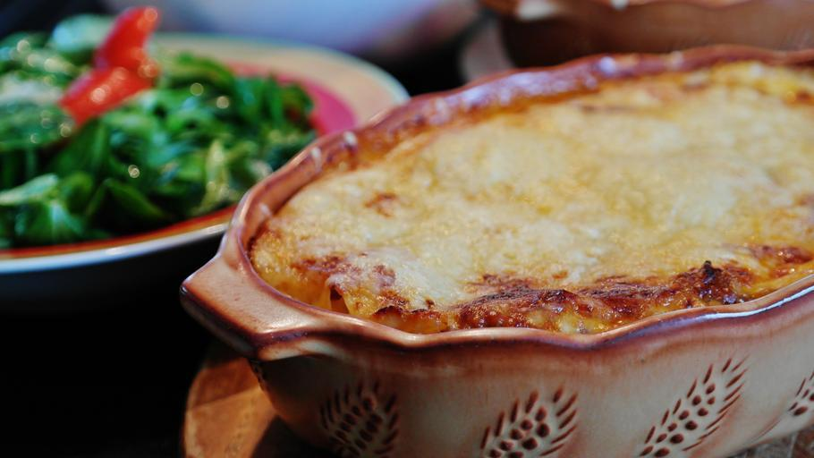

Lasagna

Description
There is nothing quite as comforting as a tall, bubbling tray of homemade lasagna fresh out of the oven. This recipe is the epitome of Italian-American comfort food, featuring layers of tender pasta sheets, a rich and savory slow-simmered meat sauce, and a creamy three-cheese blend. Each bite delivers a soul-satisfying harmony of tangy tomatoes, aromatic herbs, and melted mozzarella, making it the perfect centerpiece for Sunday family dinners or festive gatherings.
The secret to this show-stopping dish lies in the balance of textures. By layering a robust beef and sausage ragù with a velvety ricotta herb mixture, you achieve a structural masterpiece that holds its shape while remaining incredibly juicy. Topped with a golden-brown crust of toasted Parmesan and gooey cheese, this lasagna isn't just a meal—it’s an experience that invites everyone to the table for seconds.
Ingredients
For the meat sauce
- 1 lb Ground beef
- 1 lb Italian sausage (casing removed)
- 1 large Onion, finely diced
- 3 cloves Garlic, minced
- 1 can (28 oz) Crushed tomatoes
- 2 cans (6 oz) Tomato paste
- 1 tbsp Dried basil & 1 tsp Dried oregano
- Salt and black pepper to taste
For the cheese filling
- 1 container (15 oz) Ricotta cheese
- 1 egg, beaten (to bind)
- 1/4 cup Fresh parsley, chopped
- 1/2 cup Grated Parmesan cheese
For assembly
- 12–15 Lasagna noodles (boiled until al dente)
- 1 lb Mozzarella cheese, shredded
- Additional Parmesan for topping
Steps
- Prepare the Ragù: In a large pot or Dutch oven, brown the ground beef and sausage over medium–high heat. Drain excess fat. Add the onion and garlic, sautéing until translucent. Stir in the crushed tomatoes, tomato paste, basil, and oregano. Simmer on low for at least 30–45 minutes to let the flavors marry.
- Mix the Cheese: In a medium bowl, combine the ricotta, beaten egg, chopped parsley, and 1/2 cup of Parmesan. Stir until smooth and well–incorporated.
- Prep the Noodles: Boil your lasagna noodles in salted water according to package directions, aiming for a slightly firm al dente texture. Drain and lay them flat on parchment paper to prevent sticking.
- Layer the Dish: Preheat your oven to 375°F (190°C). Spread 1 cup of meat sauce on the bottom of a 9x13-inch baking dish. Arrange a layer of noodles over the sauce. Spread a portion of the ricotta mixture over the noodles, followed by a sprinkle of mozzarella and more meat sauce.
- Repeat: Continue the layers (noodles, ricotta, mozzarella, sauce) until you reach the top of the dish. Finish with a final layer of noodles topped with the remaining sauce, mozzarella, and a generous dusting of Parmesan.
- Bake: Cover the dish loosely with foil (ensure the foil doesn't touch the cheese). Bake for 25 minutes. Remove the foil and bake for another 20 minutes until the cheese is bubbly and golden brown.
- Rest and Serve: Let the lasagna rest for 15 minutes before slicing. This crucial step allows the layers to set, ensuring perfect, clean squares when served.